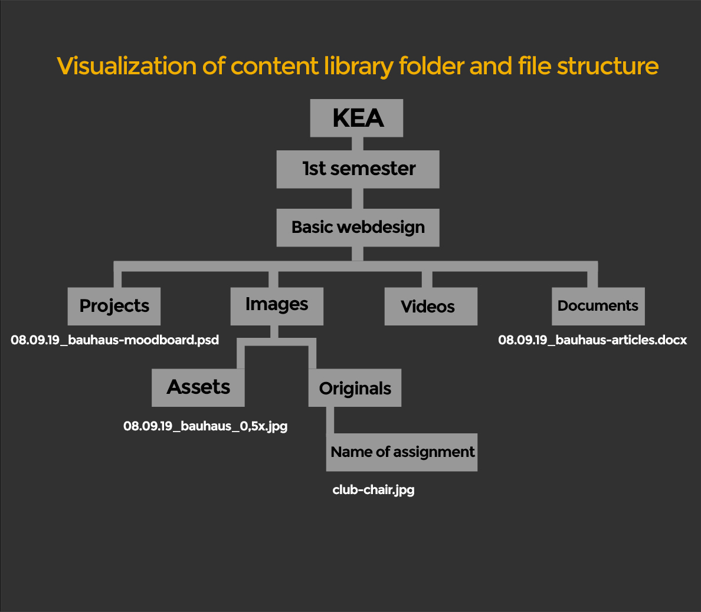
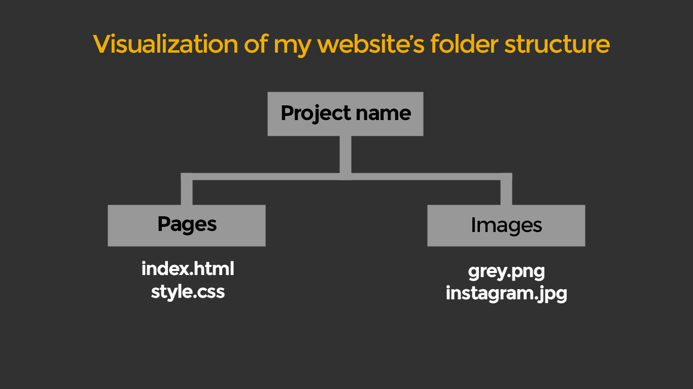

Montserrat is a geometric sans-serif typeface designed by Argentinian designer Julieta Ulanovsky. The design was inspired by signage from her historical Buenos Aires neighborhood of the same name. Montserrat is often mentioned as the closest free alternative to Gotham and Proxima Nova. This Sans Serif typeface is great for body text of website, because is readable and simple.

My ideas of logo design are very modern, sleek and simple. It's supposed to be only black/white. By this time I'm using my old logo as long as Im planning to create something more proffesional in future. My icon sketches are also supposed to be very simple and understandable. I keep up with white color to minimize variety of colors on website.
SMALL IMAGE: bauhaus-0,5x.jpg; resolution: 852 x 480; 96 dpi; 136 kB; compression: None
MEDIUM IMAGE: bauhaus-0,75x.jpg; resolution: 1279 x 719; 96 dpi; 260 kB; compression: None
LARGE IMAGE: bauhaus-1x.jpg; resolution: 1704 x 959; 96 dpi; 280 kB; compression: None
 